Performing Histories of Computation
Commit: a3cc75c3ec7a300309ff93b89f1c0c4e73eb0bde
Mon May 25 2015 21:37:42 GMT+0200 (CEST)
Exported files (bis) —
Commit: 56806a0befa4cc0b73f606ea001501f756f0292e
Mon May 25 2015 21:27:37 GMT+0200 (CEST)
Added export script and dependencies —
export.js
Commit: 3b1bca9c41177fc39e26af8793286a2bcb58d2dc
Mon May 25 2015 20:45:58 GMT+0200 (CEST)
Performing Scripts —
git and html scripts
reckon.css
template.html
Commit: 474b259cef617097cd1b6a4f50bb649166022d6c
Thu May 21 2015 21:33:08 GMT+0200 (CEST)
.gitignore —
.gitignore
index.js
package.json
Commit: 53848f1a11a889cd42834a60e53bc1be5f34a575
Tue May 12 2015 20:55:44 GMT+0200 (CEST)
cleanup —


.jpg) 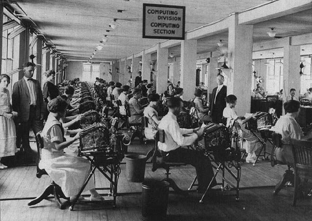
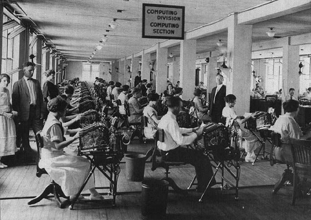


 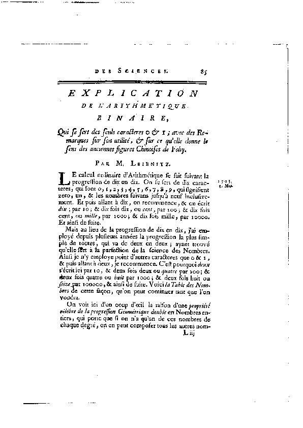
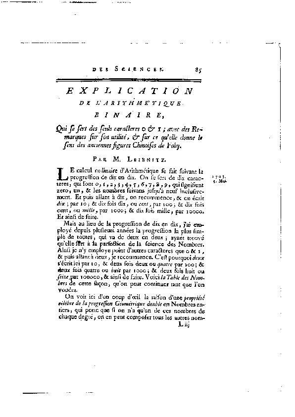


 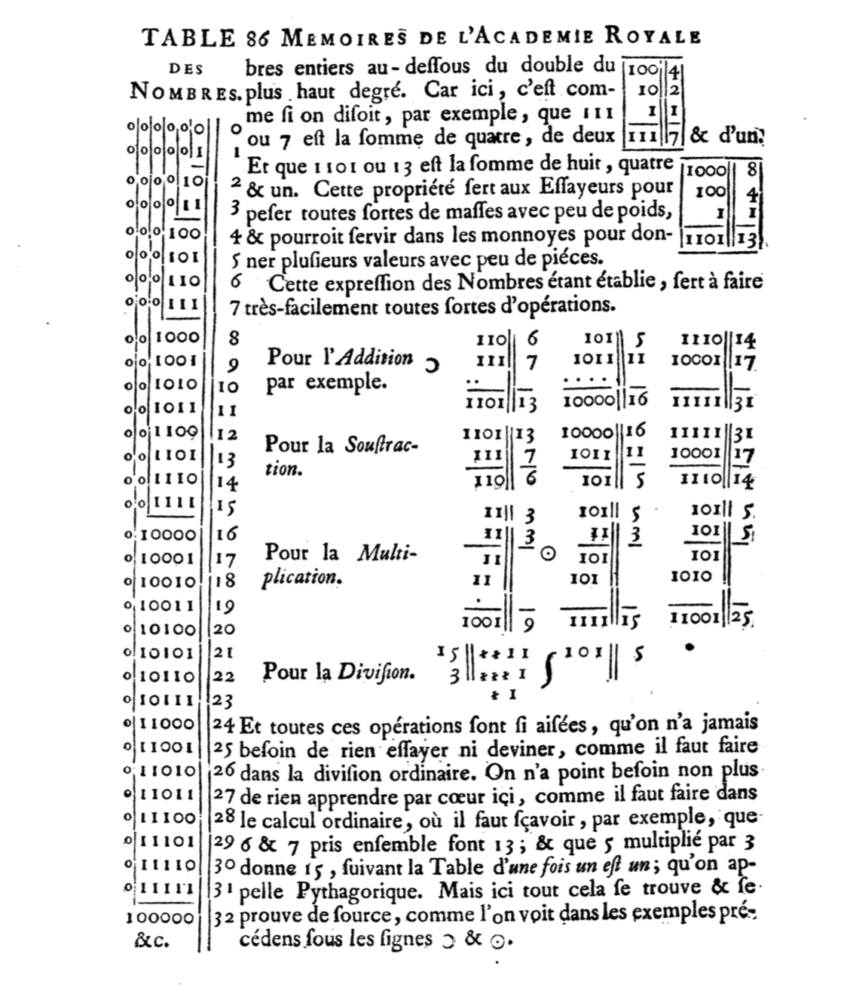
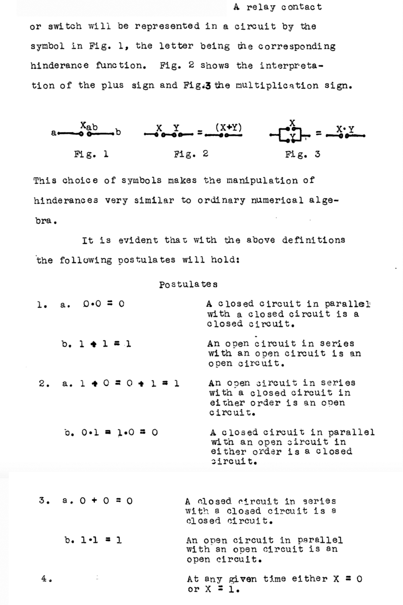
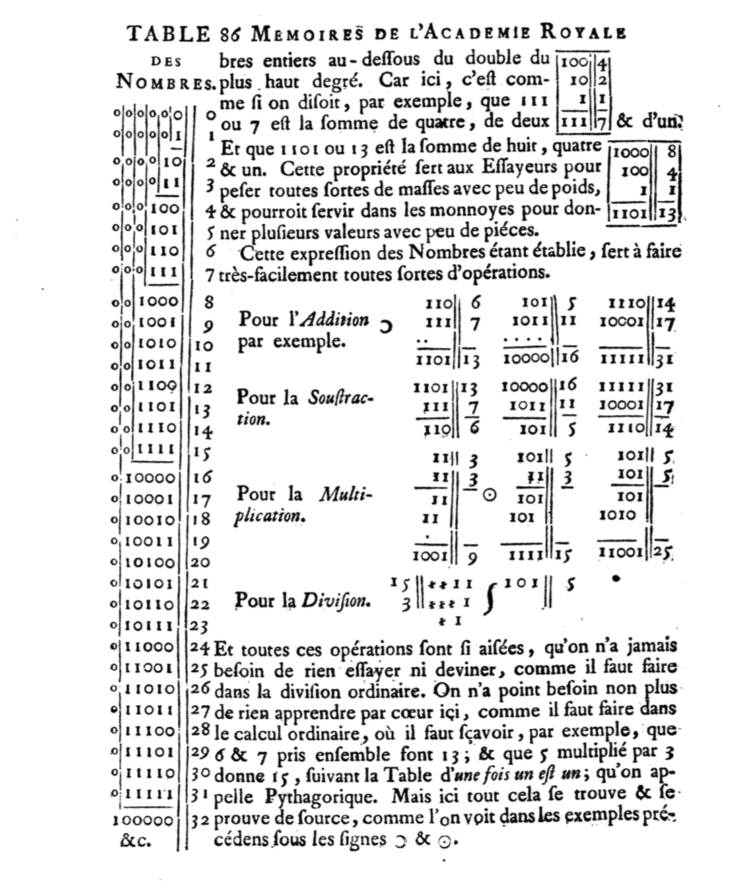
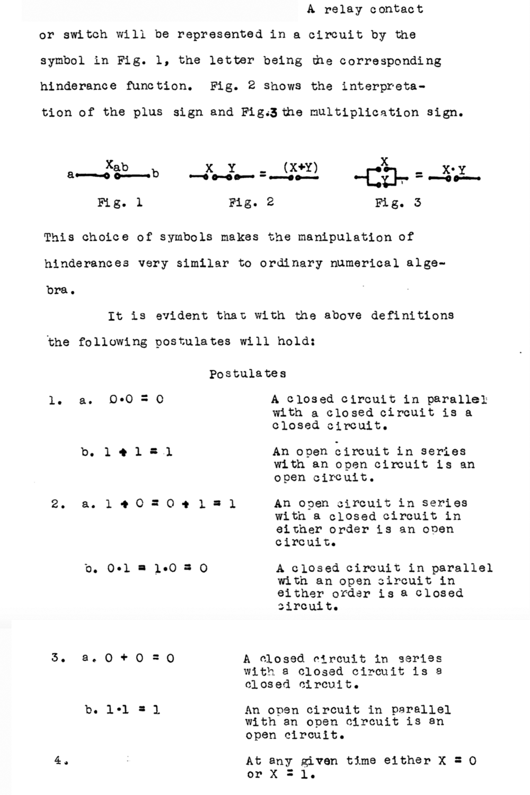
Commit: 8148dbbf365c7c69848dfb9d0c93b767ed45f587
Thu Apr 09 2015 14:30:09 GMT+0200 (CEST)
von Neumann - Planning and Coding —
Commit: b9d5e43d96e261de2985bac8fbbd2a16bb623bec
Thu Mar 19 2015 18:14:41 GMT+0100 (CET)
Stibitz adder relay —
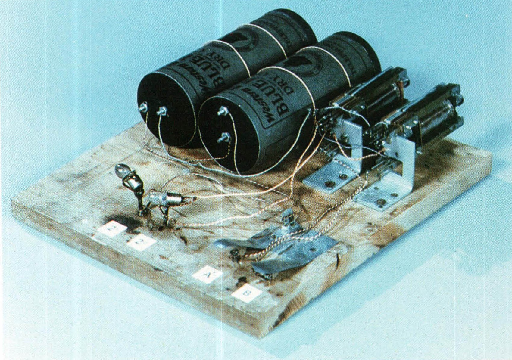
Commit: 420f1735ea0226d1237dd0c5a040de1a3da6c87d
Thu Mar 19 2015 17:57:27 GMT+0100 (CET)
The Whetstone of Witte —


Commit: 5962f7dea3e9fd32d4a616055383ef3c10b875f3
Thu Mar 19 2015 17:34:34 GMT+0100 (CET)
Logs - Napier + Briggs —
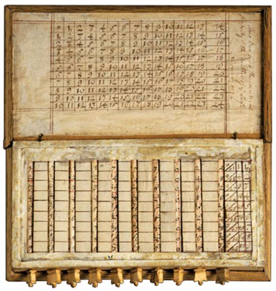
 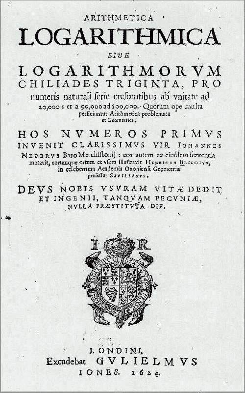
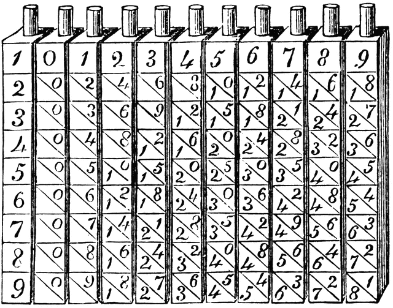
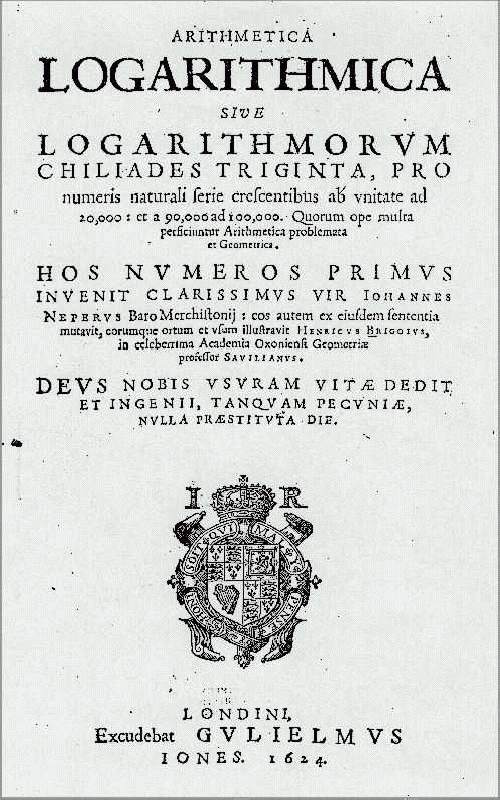
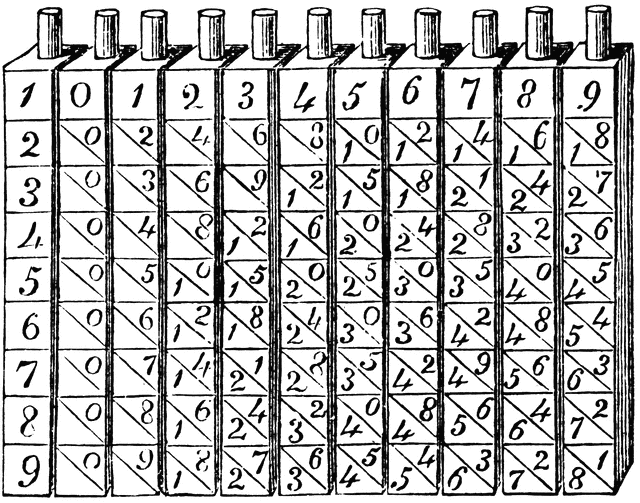
Commit: 34f8945d76452bf36f9cd05c4d60936f8348eae7
Thu Mar 19 2015 16:45:08 GMT+0100 (CET)
RAND's Million Random Digits —


Commit: c1e5a6c2262513d58479f4a0ef3490a6cd73b81e
Thu Mar 19 2015 15:59:44 GMT+0100 (CET)
Pascaline (Pascale) + Step Reckoner (Leinbniz) —
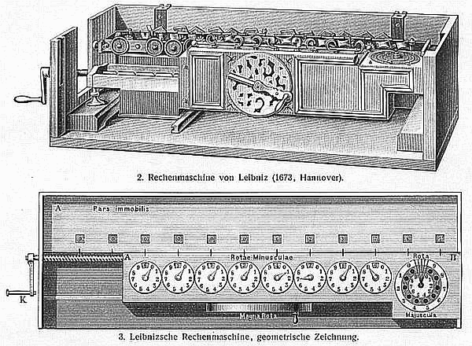
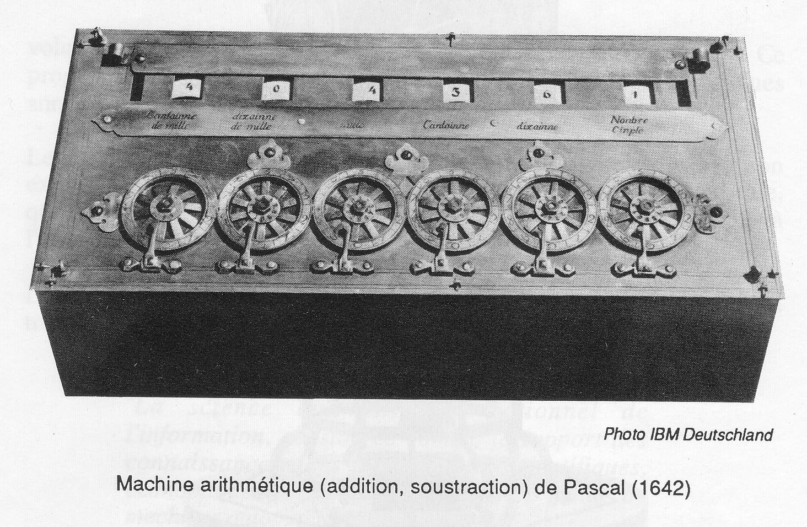
Commit: c2ff166f6185e1cf1bdc8d424ddc5ab05d0186e2
Thu Mar 19 2015 10:00:05 GMT+0100 (CET)
Turing's discussion of digital computers —
In this bit of his 1950 paper, Turing identifies the computer as a
processing and storage system, not as a computational device.
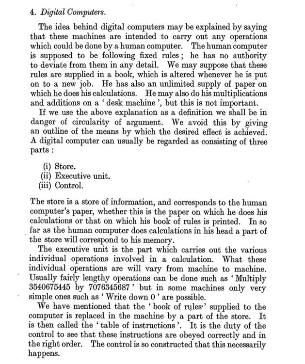
Commit: 57bdc1eb33cb1f543702bce1fa79fa51375b2bc5
Thu Mar 19 2015 09:59:12 GMT+0100 (CET)
Turing's Computing machinery and intelligence first page —
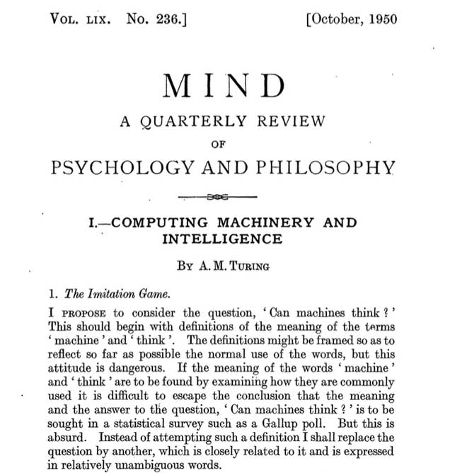
Commit: 1737a2d2e3bb0572b6bf849d9f33f60da8a47ac0
Thu Mar 19 2015 09:58:40 GMT+0100 (CET)
OED entry for reckon —
I like this as Reckon is about 17 pages longer than that for computer.

Commit: 37177e392787c302bc57d7da4cc98871c5adfef0
Thu Mar 19 2015 09:58:02 GMT+0100 (CET)
OED dictionary entry for Computer —
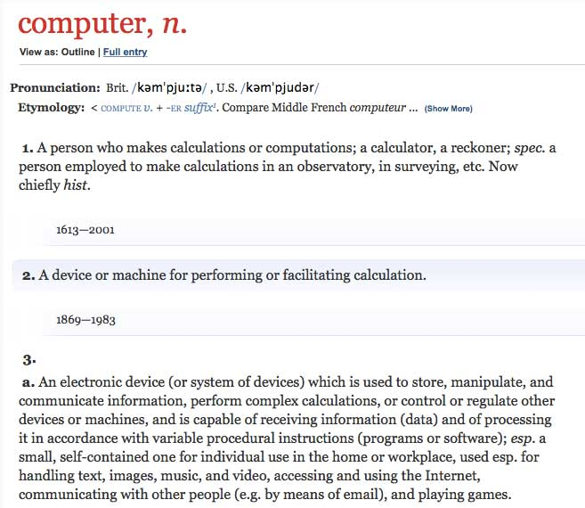
Commit: 759cd645d4eb22b38fd456879cce006ec27adff4
Thu Mar 19 2015 09:57:43 GMT+0100 (CET)
Engelbart's Mother of all Demos —
The best image I know of Doug Englebart’s 1969 demo of the personal
computer environment.

Commit: a02dde35d99d15b8a158f434ee6b6f4a0782a05d
Thu Mar 19 2015 09:56:50 GMT+0100 (CET)
some more notes —
Computation Notes 9-3-2015.pages
Commit: 4c9f26a09b221f1e65803c75f9ebb628a0ace395
Thu Mar 19 2015 09:56:35 GMT+0100 (CET)
Capurro - Information semantic shift article —
Though this paper is about the semantic shift in information and
message, I like how it disentangles a semantic shift of an allied term.
I would like to do something similar with computation.

Commit: cfbc8368159e12d0dd57030b71410bcb83ec8005
Thu Mar 19 2015 09:55:30 GMT+0100 (CET)
Barnes - Alan Kay paper —
This is Susan Barnes’ paper on Alan Kay’s computer work as a
communication medium.

Commit: 6b5d4f551fb1e87e8e9927fcca1251f89e337862
Thu Mar 19 2015 09:54:46 GMT+0100 (CET)
First Dutch computer —
Just for fun as we are in Amsterdam

Commit: 275bd069c45ddcaae1e609b9642214649df13cc5
Thu Mar 19 2015 09:54:21 GMT+0100 (CET)
The Arithometer —
The first widely used calculating machine. The Arithometer was in use
from the 1860 to this final version produced in 1914.

Commit: ddbce4b4d8fbd7fbb2b171002d5eb37f9846bd62
Thu Mar 19 2015 09:53:27 GMT+0100 (CET)
Logic gates —
Again, the process of the computer chip is not so calculative as it is
logical. It is a process of logical choices of input. Turing’s point
was that these logical choices, assembled in a process, could emulate
any calculative process.

Commit: 96e409a72f703ca63402c8f524483e73f27a8aea
Thu Mar 19 2015 09:51:42 GMT+0100 (CET)
Alan Turing photo —
I particularly like this photo of Alan Turing as it is about the only
one where he is smiling.

Commit: e6b9d81618e54b0c267708cbf7ee2fa61444c226
Thu Mar 19 2015 09:50:40 GMT+0100 (CET)
Nice set of adding machines and calculators from google —

Commit: 5151310092a162121a2d004a64e020176cb7b72e
Thu Mar 19 2015 09:50:18 GMT+0100 (CET)
Alan Kay's KiddieKomp Computer —
this shows how in the early stages of SRI and PARC’s work on the
personal computer, they were media and education devices. This shows
how the goals were not at all about computation, but about media and
information work and coding.

Commit: 59b9924d4610984f5aaa770ff810066c55320864
Wed Mar 04 2015 19:35:29 GMT+0100 (CET)
When computers were human —
Chapter 5 of Grier’s Book, when People were human. "A carpet for the
computing room".
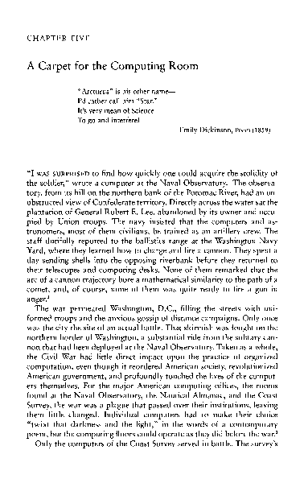
Commit: a7b02f434e5137421f4091d491885abda839960d
Wed Mar 04 2015 19:34:47 GMT+0100 (CET)
Electronic brains —
A 1960s advert for the Geniac, an electronic brain (calculator)

Commit: ca9b21e46a57b16054ad1ddc620a3663c4868df3
Wed Mar 04 2015 19:34:07 GMT+0100 (CET)
Spreadsheet way of knowing —
Paper from the early 1980s on the rise of spreadsheets and their
particular epistemology.

Commit: 51149552523e10a2f0a765283ff85b39bfb1e571
Wed Mar 04 2015 19:33:15 GMT+0100 (CET)
Ledgers as computational formula —
Ledgers were the primary computational forms for economic, statistical
and financial reckoning until well into the 1970s.


Commit: 171d96db6379741183c94708933a3562fbe33367
Thu Feb 12 2015 10:20:23 GMT+0100 (CET)
Calculating machines, calculating women —
Three works on women as computors (computers) and its importance to the
concept of computation.


Commit: 730c25b9be31f5d36fbd79f1145dd0d08ece1e62
Thu Feb 12 2015 10:19:19 GMT+0100 (CET)
NRC categories of mathematical tables —
This is fun to see that "Calculating machines" are relegated to Z

Commit: e8e60e82c750b7901f0018c53c8ef6d2fc5627ab
Thu Feb 12 2015 10:18:15 GMT+0100 (CET)
History of Computation —
Not that good, but a useful resource.

Commit: e1bd1f73d3534fa450c1b1f3202a4667a84bc304
Thu Feb 12 2015 09:40:28 GMT+0100 (CET)
Turing's article on Computing machinery intelligen —
Turing's article on Computing machinery and intelligence. There is an
open document as well as the original.
Turing_Computing machinery and intelligence_1950.docx

Commit: 971ee4a2c2d74a27d40c4179f952d2c6804d7e0a
Wed Feb 11 2015 14:29:03 GMT+0100 (CET)
Turing's original paper —
This is a clean copy of Turing’s On Computable Numbers. Thought it
could be nice to have.

Commit: 35e55430752ec2ee1f1250fd64c6883b55f136dd
Tue Feb 10 2015 11:50:38 GMT+0100 (CET)
Deleuze -- The Exhausted —
About Combinatorics and Samuel Beckett — à propos when talking about
Computers (humans)

Commit: c3d457ec50a0fab867b75f6c495e39c2d99a2f1d
Tue Feb 10 2015 11:47:04 GMT+0100 (CET)
Von Neumann (EDVAC + Errors) —
I like the idea of fragments (re: Arcades Project) — perhaps we’d need
to find a combinatorics of fragments.
Computation Project - a proposal.pages
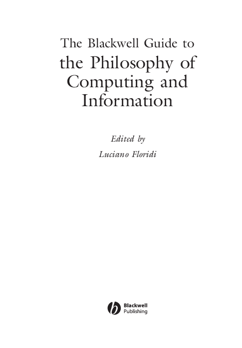
 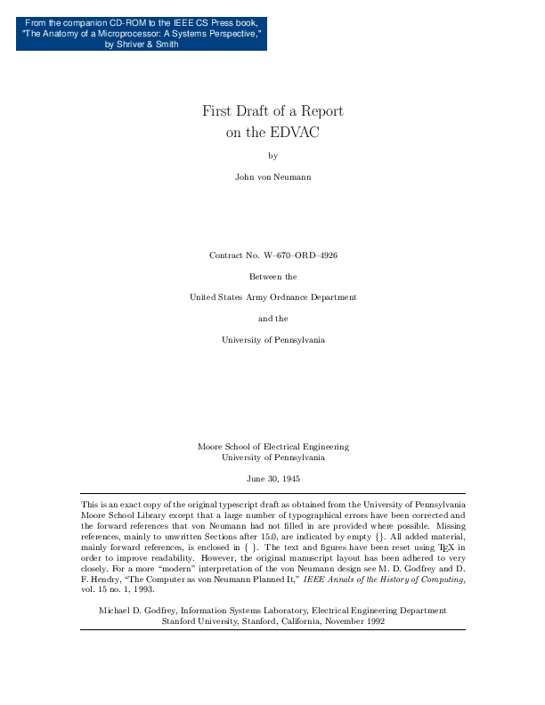
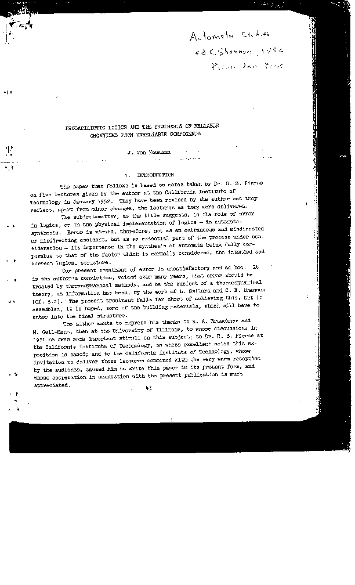
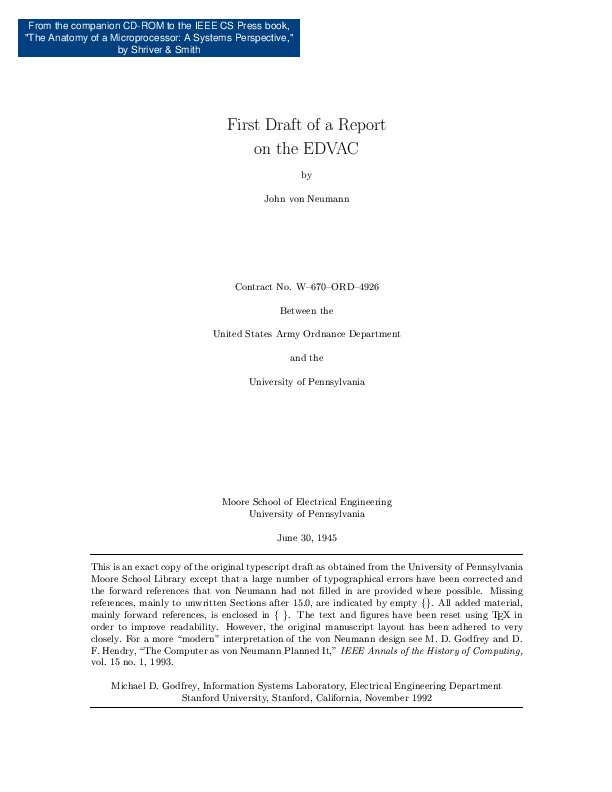
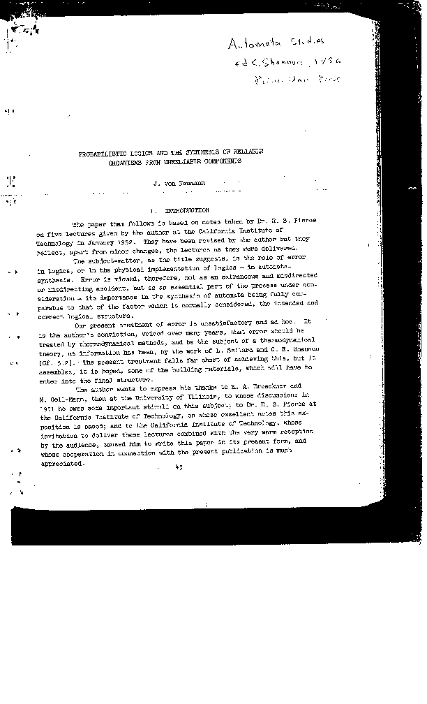
 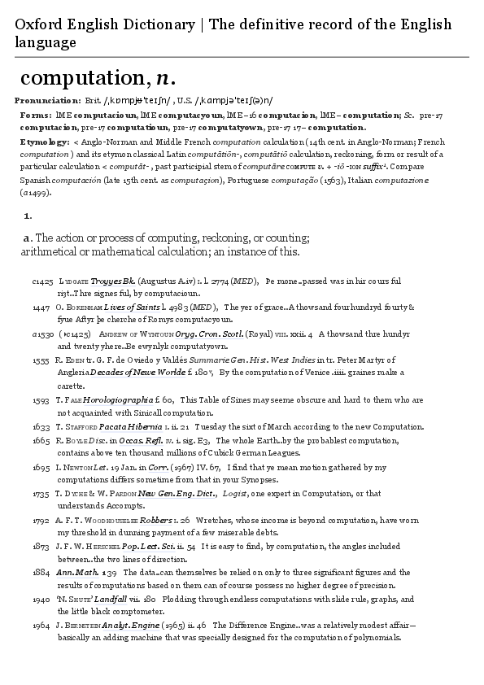
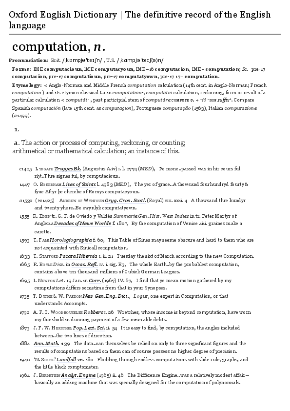
Commit: 9d76cb75f3ca0df9b1c78e2f66c6ad00b4138052
Fri Feb 06 2015 10:34:53 GMT+0100 (CET)
shannon symbolic analysis
Commit: 64bb642fa08f57f973037a33bbd9e118ed990104
Fri Feb 06 2015 10:26:01 GMT+0100 (CET)
_prose.yml config
_prose.yml
Commit: 9dceef36ffc51697ce48724da8105f9be40404ec
Thu Feb 05 2015 13:47:24 GMT+0100 (CET)
Initial commit —
README.md
Commit: eaf4543e4be487fb8b45618aab2c341004963f80
Thu Feb 05 2015 14:44:38 GMT+0100 (CET)
HAHA! commit —
index.md
Commit: 7dadd47237a3290df8098a7d48259deea6c83dd1
Thu Feb 05 2015 13:55:04 GMT+0100 (CET)
HAHA! commit —
index.html
{kind=link}
{kind=link}
{kind=link}
{kind=link}
{kind=link}
{kind=link}
{kind=link}
{kind=link}
{kind=link}
{kind=link}
{kind=link}
{kind=link}
{kind=link}